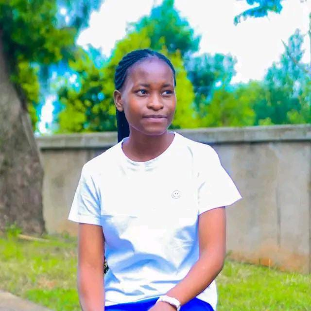

Name: Elinah Mmbone
AltSchool ID: ALT/SOE/024/2609
Biography
I am currently navigating an exciting and transformative path in technology through AltSchool Africa, an outstanding program that provides a comprehensive education in software engineering, with a special emphasis on front-end development. My passion for tech lies in building innovative and user-friendly digital solutions. Through this program, I am expanding my technical proficiency and learning to create engaging web applications that enhance user interactions.
My journey began with an eagerness to develop tools that make a real difference in accessibility and user experience. This sparked my interest in web development, where I have explored coding languages, design strategies, and user interface concepts. Each project has reinforced my dedication to using technology to empower users and improve their digital experience.
The opportunity to join AltSchool Africa means not only advancing my career but also contributing to a mission of fostering diversity in the tech industry. Being part of this supportive and collaborative environment enables me to learn from mentors and peers who are equally passionate about leveraging technology for positive change.
Why I Joined AltSchool Africa
My primary motivation for joining AltSchool Africa is to develop a strong foundation in software engineering by acquiring both the technical expertise and hands-on experience required for success in this field. The program offers an excellent chance to dive deep into advanced coding practices, design frameworks, and the latest innovations that are shaping technology today. I am passionate about honing these skills to build a career centered around creating impactful, effective digital solutions. What draws me most to this program is the opportunity to engage with a community of ambitious peers and seasoned mentors who can challenge and inspire me. The collaborative environment at AltSchool Africa is perfect for sharing ideas, problem-solving together, and gaining insights that enrich my understanding of the tech world. This collective learning approach will not only enhance my knowledge but also help me build lasting professional connections that will support my future career path. My long-term goal is to use the skills and experience gained from this program to make a significant impact in the tech industry. I want to develop projects that solve real problems and contribute to positive change, fostering advancements that help communities and improve lives. Additionally, I aspire to inspire and mentor others who are just beginning their tech journeys, promoting diversity, inclusivity, and a culture of continuous learning in the field.